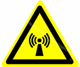
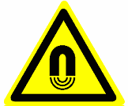
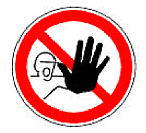
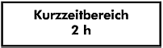
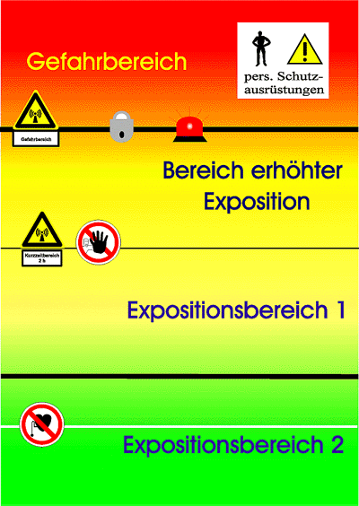

Beispiele für Kennzeichnungen
Warnzeichen:
 |
Warnung vor elektromagnetischem Feld |
 |
Warnung vor magnetischem Feld |
| Warnung vor elektrischem Feld |
Verbotszeichen:
| Verbot für Personen mit Herzschrittmacher |
|
 |
Zutritt für Unbefugte verboten |
Hinweiszeichen:
 |
Bereich erhöhter Exposition mit Aufenthaltsbeschränkung von 2 Stunden pro Arbeitsschicht |
Gefahrbereich |
|
Hinweiszeichen mit Angabe des erforderlichen Sicherheitsabstandes |
Zonenkonzept: Beispiel für Kennzeichnung und Sicherung
